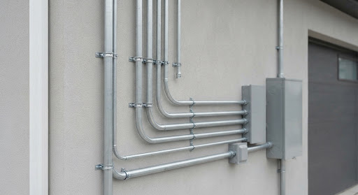

Austin residential clearance · Site check
Simulation
Base admin · member growth and installs
Will the battery fit on this wall?
Three modeled homes, checked against the clearance rule: 9 ft of clear wall at the meter, 3 ft from the gas meter and the fence.
Next: Ready to install
Side wall model
Drag to turn. Scroll to zoom. Arrow keys move the battery.
9 ft clear space at the meter
3 ft from the gas meter
Property line (dashed: 3 ft from the fence)
Battery turns amber to flag a clearance conflict
Rule source: house/clearance.py
Clearance status
Required clear wall
Gas meter setback:
Property fence setback:
Where the battery goes

IllustrationThe battery sits next to the electric meter and main panel. The rule reads the wall right there: 9 ft clear, 3 ft from the gas meter and the fence.
Rule
Model9 ft clear wall per battery, 3 ft setback from the gas meter and the fence, checked on every case.
Next step
ChecksSuggested checks for this case, and who does each one
Details: the numbers for this home, every check, the rules, and what is an estimate
Every check at this spot
What is an estimate
Rule numbers come from house/clearance.py: 9 ft of wall per battery, 3 ft from the gas meter and from the fence. The battery size of 4 x 2 x 5 ft is an estimate. Property lines and wall lengths are modeled. Photos add context, and a qualified site assessment confirms the fit.